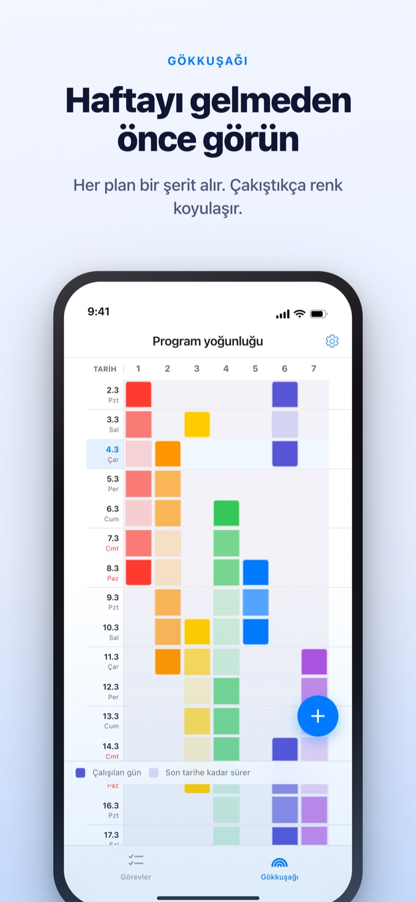
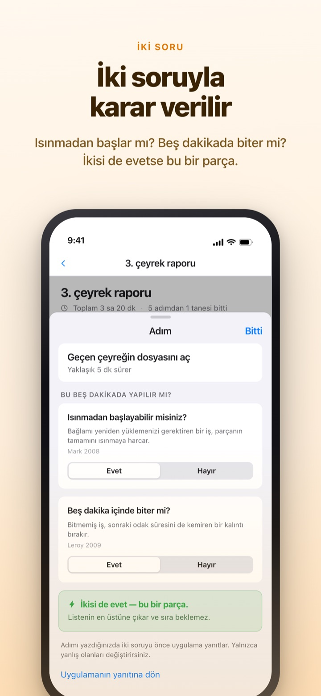
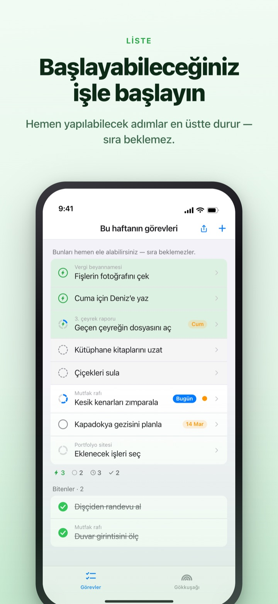
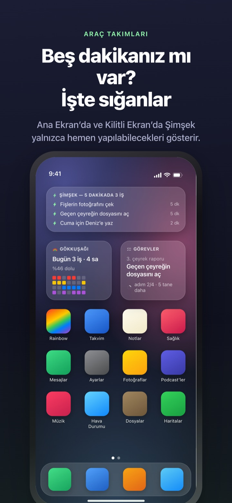

Yoğun haftayı önceden görün.
Boş beş dakikayı kaçırmayın.
İşler üst üste bindikçe gökkuşağı koyulaşır. Büyük bir işi adımlara bölün, bir boşlukta yapabileceğiniz adım zaten en üstte bekliyor olsun.
Gökkuşağı, iş bölme, zamanlayıcı ve Mac ile eşzamanlama ücretsizdir.

Kendiniz deneyin
"3. Çeyrek Raporu" beş adıma bölünmüş durumda. Bir adım seçin, süresini değiştirin ya da bir yanıtı tersine çevirin. Yalnızca iki soruya da evet alan adım, beş dakikada yapılacak bir parça olur.
Takvim boş görünüyor ama hafta yine de nefesinizi mi kesiyor?
Takvim bir şeyin planlanıp planlanmadığını söyler, üstüne ne kadar yük bindiğini söylemez. Üç teslim tarihinin aynı haftaya düştüğünü genellikle o haftanın içindeyken fark edersiniz; aradaki boş beş dakika da yapılacaklar listesini okumakla geçer. Rainbow of Desire haftanızı bir ızgara olarak çizer, çakışan yerleri koyulaştırır ve boşluğa sığan adımları ayrıca ayırır.
İki soru, her şey netleşir
Büyük bir işi böldüğünüzde her adıma iki soru sorulur. Isınmadan başlayabilir misiniz? Beş dakika içinde biter mi?
Yalnızca iki evet onu bir parça yapar. Uygulama süreye ve sözcüklere bakarak önce yanıtlar, siz yalnızca yanlışsa çevirirsiniz.

Boşluk mu çıktı? Sadece en üste bakın
Bir işi sağa kaydırıp şimşek ekleyin, sırayı atlayıp en üste geçsin. Bütün listeyi okumanıza gerek kalmaz.
Adımların birbirini bekleyip beklemediğini her grup için bir kez belirlersiniz. Sırayla seçeneği bitmemiş ilk adımı, Sırasız seçeneği şimdi alabileceğiniz parçayı öne çıkarır.

Uygulamayı açmadan görünür
Zamanlayıcı etkinliğin bittiği ana kadar sayar; kalan süre Dynamic Island'da ve Kilitli Ekran'da da görünür.
Ana Ekran ve Kilitli Ekran araç takımları üzerinde çalıştığınız işi, beş dakikaya sığanları ve bu haftanın gökkuşağını gösterir. (Araç takımları Pro'ya dahildir)

Üç adımda başlayın
- 1
Etkinliği çizin
Başlangıç gününde boş bir hücreye basılı tutun, bitiş gününe dokunun. Gökkuşağında bir çizgi belirir.
- 2
Büyük işleri bölün
Bir işe dokunun, adımlarını yazın ve süre seçin. İki soruyu önce uygulama yanıtlar.
- 3
Boşlukta en üste bakın
Parçalar ve şimşekli işler sıra beklemeden en üstte toplanır.
Ekranda karşılaşacaklarınız
- Koyu hücre · açık hücre
- gerçekten üzerinde çalıştığınız günler ve bitiş tarihine kadar kalan süre
- Dolu bir satır
- aynı anda o kadar çok iş dönen bir gün ki tek bir gecikme bütün günü kaydırır
- Parça
- iki soruya da evet; beş dakikanız olduğunda alın
- Kısa odak süresi
- ısınma gerekmez ama bir parçada bitmez; tek oturuşta tamamlanır
- Odak süresi
- ısınma ister ya da 45 dakika ve üzeri sürer; ayırdığınız zamana koyun
- Şimşek
- kendi "hemen şimdi" işaretiniz; en üste çıkar
- Sırayla · Sırasız
- adımların birbirini bekleyip beklemediği, grup başına bir kez belirlenir
- Geri Kazanım Defteri
- haftanın dökümü: kalanlar, geri kazanılan zaman ve dinlenme, ayrı tutulur ve asla toplanmaz
Süre aşağıdan yukarı toplanır: bir işin süresi adımlarının toplamıdır.
Bugün için gereken her şey ücretsiz
Ücretsiz
- Gökkuşağı (program yoğunluğu ızgarası)
- İşleri adımlara bölme ve iki soru
- Şimşek ve adım sırası
- Dynamic Island ve Kilitli Ekran'da zamanlayıcı
- Mac'teki Rainbow Craft ile iCloud üzerinden eşzamanlama
- Son iki haftanın Geri Kazanım Defteri
Rainbow Plus · Rainbow Pro
- Plus: etkinlik istatistikleri ve iki haftadan eski defter
- Pro: Plus'ın tamamı ve Ana Ekran ile Kilitli Ekran araç takımları
- Pro: Takvim'den içe aktarma ve sürekli gösterme
- Pro: etkinlik paylaşımı, yalnızca görüntüleme
- Pro: Mac'teki Rainbow Craft Pro'nun da kilidini açar
Her biri yıllık abonelik ya da tek seferlik ömür boyu satın alma olarak
Yalnızca geçmiş haftalara dönüp bakmak ve verileri uygulamanın dışına taşımak için ödeme yaparsınız. Daha önce Pro aldıysanız ya da aylık aboneliğiniz sürüyorsa hâlâ Pro'sunuz.
Sık sorulan sorular
Hesap ya da iCloud gerekli mi?
Tek başınıza kullanıyorsanız hayır. Kayıt yok, her şey cihazda kalır. Başka cihazlar, Mac uygulaması ya da paylaşım için iCloud'a giriş yapın.
Uygulama bir soruyu yanlış yanıtladı.
Adıma dokunup Evet ile Hayır arasında geçiş yapın. Kendi yanıtınız her zaman önce gelir. Kararı geri vermek için "Uygulamanın yanıtına dön"e dokunun. Süresi girilmemiş bir adım parça sayılmaz, çünkü uygulama beş dakikada bitip bitmeyeceğini bilemez.
Başkalarıyla paylaşabilir miyim?
Davet bağlantısıyla etkinliklerinizi yalnızca görüntülenecek şekilde paylaşabilir (Pro) ya da davet ettiğiniz kişilerle birlikte okuyup düzenlediğiniz bir yapılacaklar listesi açabilirsiniz. Bağlantıyı alan herkes katılabilir, bu yüzden yalnızca doğru kişilere gönderin. Apple'ın Aile Paylaşımı ile ilgisi yoktur.
Takvim etkinliklerim görünür mü?
Seçtiğiniz takvimlerdeki etkinlikler gökkuşağında ve gün görünümünde yer alır (Pro). Uygulama yalnızca okur, takvime hiçbir şey yazmaz.
Araç takımından işaretleyebilir miyim?
Araç takımları yalnızca görüntüleme içindir. Birine dokunduğunuzda görevler hemen açılır, işaretlemeyi orada yapın.
Mac uygulaması ayrıca mı satın alınıyor?
Rainbow Craft, Mac App Store'da ayrı bir macOS uygulamasıdır. Aynı iCloud hesabıyla görevler ve haftalık planlar kendiliğinden eşzamanlanır, bunun bir ücreti yoktur.
Eski görevlerim duruyor mu?
Evet. Görevler, adımlar ve girdiğiniz süreler korunur. Eski başlama koşulu etiketlerini uygulama iki soruyla yeniden değerlendirir.
Verilerim nerede saklanıyor?
Sunucu yoktur. Her şey cihazınızda ve kendi iCloud'unuzda durur, geliştirici göremez. Reklam tanımlayıcısı ve konum kullanılmaz. Uygulama yalnızca sizi tanımlamayan anonim kullanım istatistikleri gönderir; bunları Ayarlar'dan kapatabilirsiniz.
Aboneliği nasıl iptal ederim?
Ayarlar > Apple Hesabı > Abonelikler bölümünden. Dönem bitmeden en az 24 saat önce iptal edilmezse aynı fiyatla yenilenir. Ömür boyu satın alma bir kez ödenir.
Takıldınız mı ya da bir şey tuhaf mı görünüyor? leeo@kakao.com adresine yazın. Uygulamanın ayarlarında da bir iletişim seçeneği var.